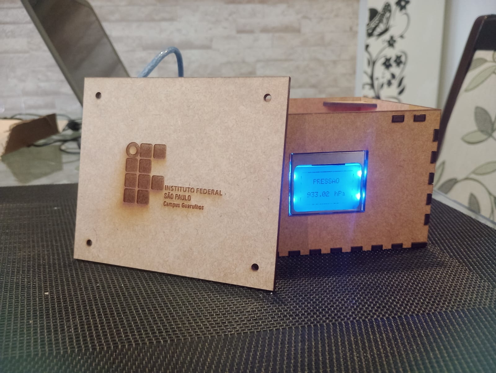
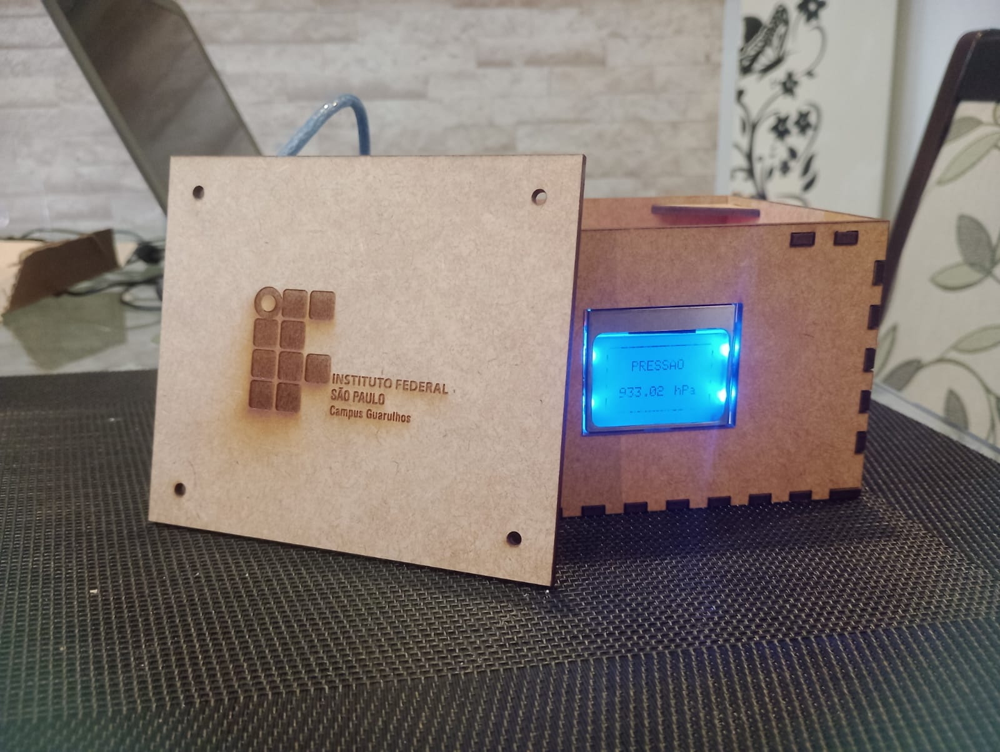

Montagem dos Circuitos
O circuito não tem nada de muito complexo, apenas o sensor e o display conectados ao protoboard.

Programação do Arduino
Código utilizado:
// Carrega bibliotecas graficas e sensores
#include <Adafruit_GFX.h>
#include <Adafruit_PCD8544.h>
#include <Adafruit_BMP085.h>
#include <Wire.h>
#include <SPI.h>
// Inicializa o display nos pinos acima
Adafruit_PCD8544 display =
Adafruit_PCD8544(8, 9, 10, 11, 12);
Adafruit_BMP085 bmp180;
void setup()
{
Serial.begin(9600);
// Informacoes iniciais no display
display.begin();
// Apaga o buffer e o display
display.clearDisplay();
// Ajusta o contraste do display
display.setContrast(50);
// Define tamanho do texto e cor
display.setTextSize(1);
display.setTextColor(BLACK);
// Retangulo pressao
// Texto inicial Pressao
display.setCursor(20,10);
display.println("PRESSAO");
display.setCursor(55,28);
display.println("hPa");
display.setCursor(11,28);
display.println("------");
display.drawRoundRect(0 ,0, 84 ,46, 3, 2);
display.display();
display.setContrast(53);
delay(1000);
// Inicializa o sensor BMP180
if (!bmp180.begin())
{
Serial.println("Sensor BMP180 nao encontrado !!");
while (1) {}
}
}
void loop()
{
float p = bmp180.readPressure()/100.0;
// Atualiza valor da pressao
display.fillRect(12, 28, 42 , 10, 0);
display.setCursor(11,28);
display.println(p,2);
display.display();
// Aguarda 5 segundos para efetuar nova leitura
delay(5000);
}
Fase de testes
O aparelho foi testado em diferentes localidades em datas distintas, apresentando os seguintes resultados:
| Locais | Medição 1 | Medição 2 | Medição 3 |
|---|---|---|---|
| Vila Rio (GRU) | 935,59 hPa | 936,47 hPa | 935,62 hPa |
| Estação Tucuruvi | 948,36 hPa | 947,10 hPa | 948,68 hPa |
| Osasco | 957,42 hPa | 956,63 hPa | 955,92 hPa |
| Estação Luz | 959,03 hPa | 959,29 hPa | 959,13 hPa |
| Estação Armênia | 943,34 hPa | 943,65 hPa | 943,98 hPa |
Finalização do Projeto
Por fim, o último passo foi a confecção da caixa, onde optamos por utilizar mdf, por ser uma opção de baixo custo e com um acabamento bonito após o corte a laser.
 
